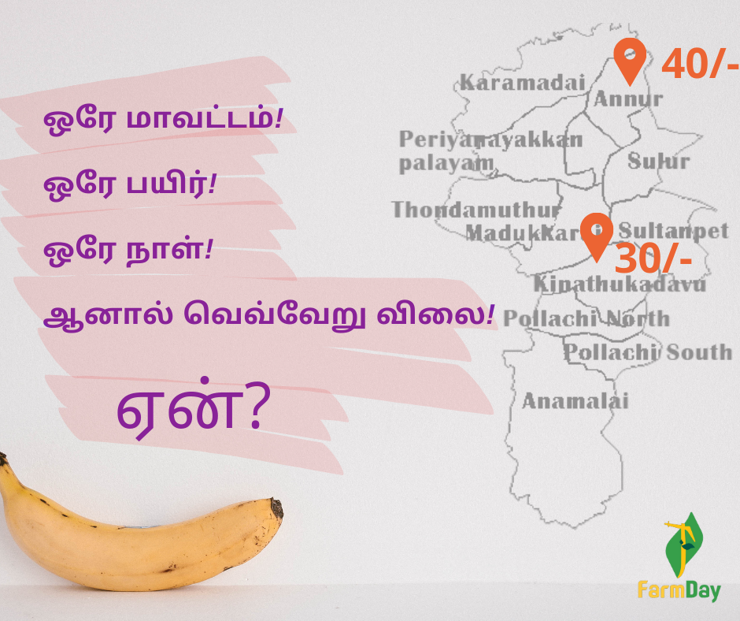

Kadhali Price Difference
The FarmDay mobile app, created for farmers, is already proving successful by helping farmers know the correct selling prices of their crops. Shortly after launch, it revealed significant price variations for *Kathali* bananas within Coimbatore District—selling at ₹40/kg in Annur Taluk and ₹30/kg in Kinathukadavu Taluk on December 4th. This price gap highlights the need for accurate pricing information, which FarmDay provides. Farmers can use the app to determine fair prices, sell accordingly, and share prices with other farmers to ensure better market transparency and fair pricing for everyone in the farming community.